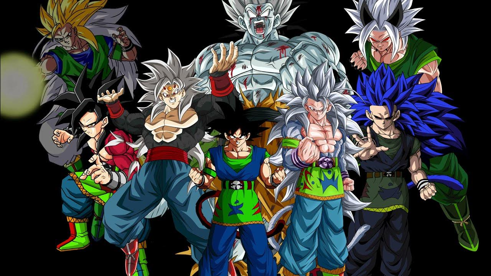

Bienvenido
Este sitio está dedicado a explorar las transformaciones alternativas y creadas por fans dentro del universo de Dragon Ball AF.
Desde teorías hasta diseños únicos, aquí podrás conocer distintas formas que han sido imaginadas por la comunidad como evolución de los guerreros Saiyajin y otros personajes del universo.
